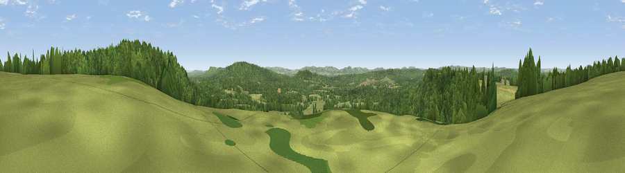

Viewpoint near Liphook
#16168 in England · top 20% of its area beats it · near LiphookThe view, rendered

A 360° render of this exact spot computed from the terrain model, tree cover and land cover — summer colours, afternoon light, calibrated against photographs of famous viewpoints. Real trees, hedges and buildings will differ in detail.
The panorama
Grey silhouette: terrain skyline in each direction (720 bearings, Earth curvature and refraction included). Dashed green: skyline with trees (+15 m) and buildings (+8 m) as obstacles. Blue strip: how far the ground is visible on each bearing.
Where the view opens
Wedge length = distance to the farthest visible ground on that bearing (vegetation-aware). Rings at 10, 25 and 50 km.
What fills the view
55% woodland · 35% grassland · 10% cropland
Angular shares of the visible panorama (visual magnitude), not map area. Landscape diversity 0.41 (0–1 Shannon).
Key numbers
More beautiful places nearby
The staircase of upgrades: each row has a higher view potential than everything closer. Driving times are estimates from straight-line distance, calibrated against real road routing — check an actual route before setting out.
| Place | Direction | Drive | Score |
|---|---|---|---|
| Viewpoint near Lynchmere | E · 1 km | ~3 min | 62.2 |
| Viewpoint near Fernhurst | E · 7 km | ~15 min | 75.1 |
| Beacon Hill | SSW · 11 km | ~21 min | 85.8 |
| Chanctonbury Ring | ESE · 34 km | ~51 min | 87.0 |
| Viewpoint near St. Lawrence | SSW · 60 km | ~82 min | 88.2 |
| Viewpoint near Niton | SW · 64 km | ~86 min | 89.2 |
| Viewpoint near West Bexington | WSW · 136 km | ~160 min | 89.5 |
| The Knoll | WSW · 137 km | ~161 min | 91.0 |
51.05386, -0.79042 · source: screening · position refined by local search. Computed location — check access rights before visiting.